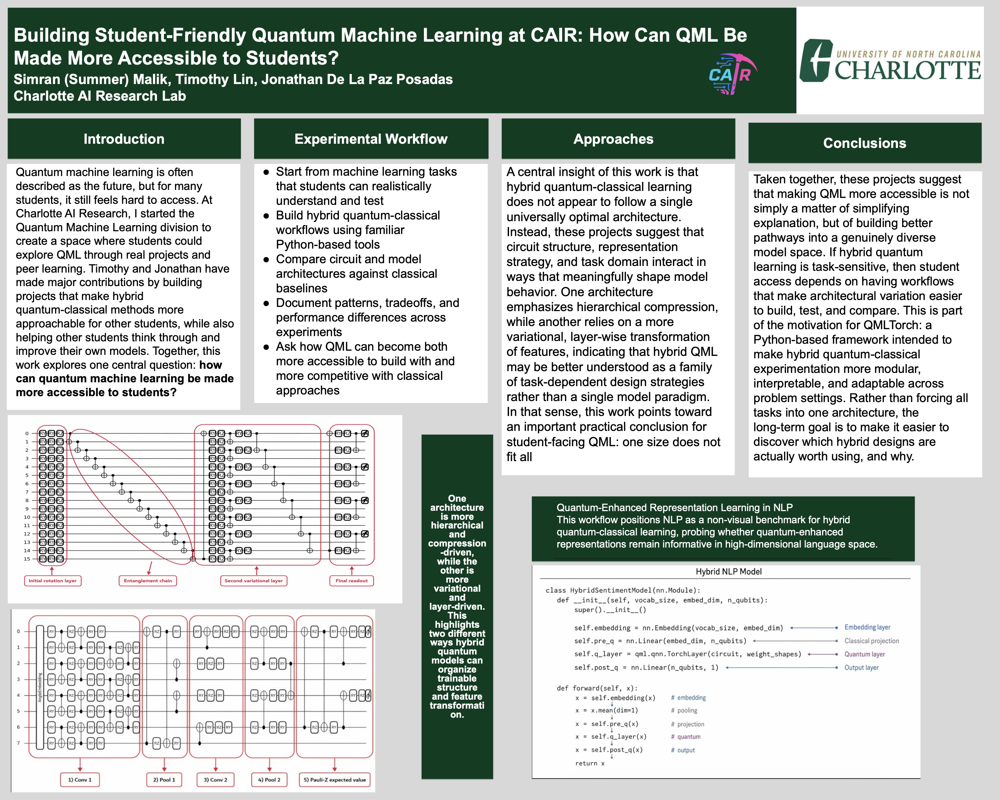

Title: Building Student-Friendly Quantum Machine Learning at CAIR: How Can QML Be Made More Accessible to Students?
Authors and collaborators: Simran (Summer) Malik, Timothy Lin, and Jonathan De La Paz Posadas
Organization: Charlotte AI Research Lab
This poster is the exception to the ownership statement on the main QML Outreach page. It is collaborative work, and the collaborators are credited here exactly as they appear on the poster.
The poster asks how quantum machine learning can become more accessible to students without flattening the technical questions that make QML interesting. The workflow begins with understandable machine learning tasks, builds hybrid quantum-classical models with familiar Python tools, compares circuit and model architectures with classical baselines, and documents tradeoffs across experiments.
A central conclusion is that there is no single universally optimal hybrid architecture. Circuit structure, representation strategy, and task domain interact. One project emphasizes hierarchical compression, while another is more variational and layer-driven. That task sensitivity motivates QML Torch: a modular framework for building, testing, and comparing different hybrid designs instead of forcing every problem into one circuit.
